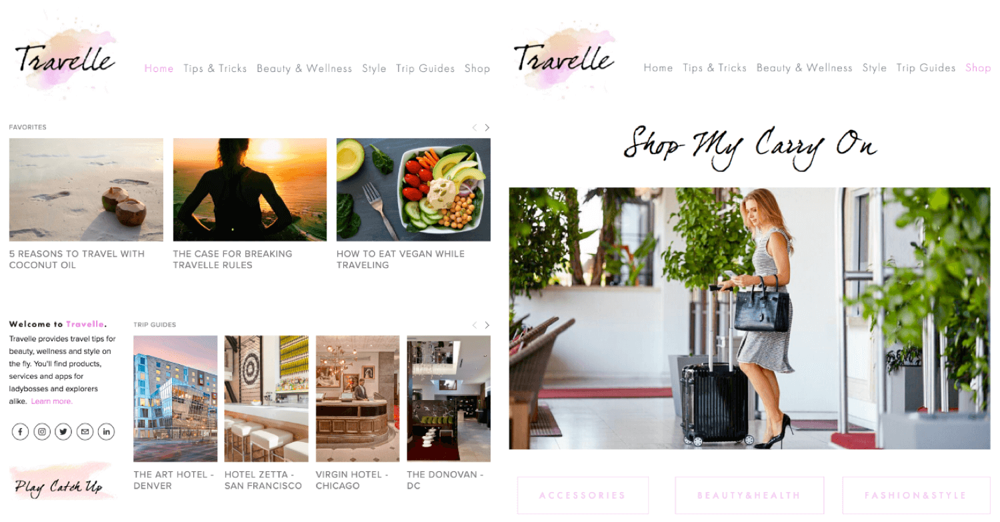
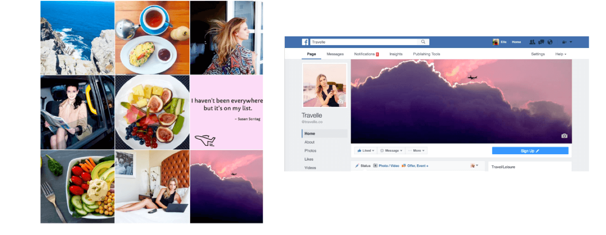

Travelle.co
Brand Development Intern
Summer 2015 - Winter 2016
COMPANY
Travelle a premier online resource for female business and leisure travelers featuring beauty, wellness and style tips. Travelle showcases products, service providers and apps to help women maintain their quality of life, well-being, looks and sense of style while away from home.
ROLE
Over the course of a year, I began as a Web Marketing and Business Development Intern during the summer in 2015. I focused on brand development by improving the interface of the website and increasing user accessibility. Also, I helped improve web traffic and SEO by 25% by analyzing key platforms like Google Analytics and Webmaster Tools.
I later transitioned into a more social media focused position where I ran the Facebook, Twitter, LinkedIn and other social media platforms with a focus on online outreach and promotion.
